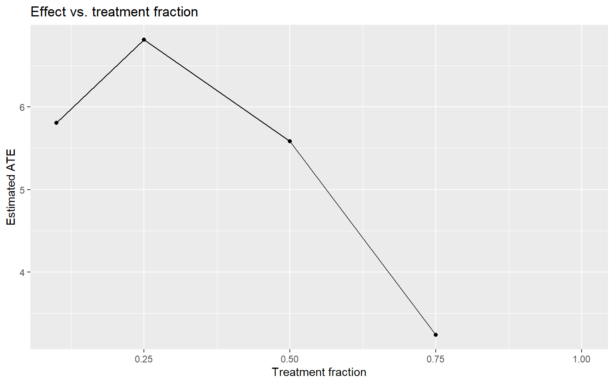
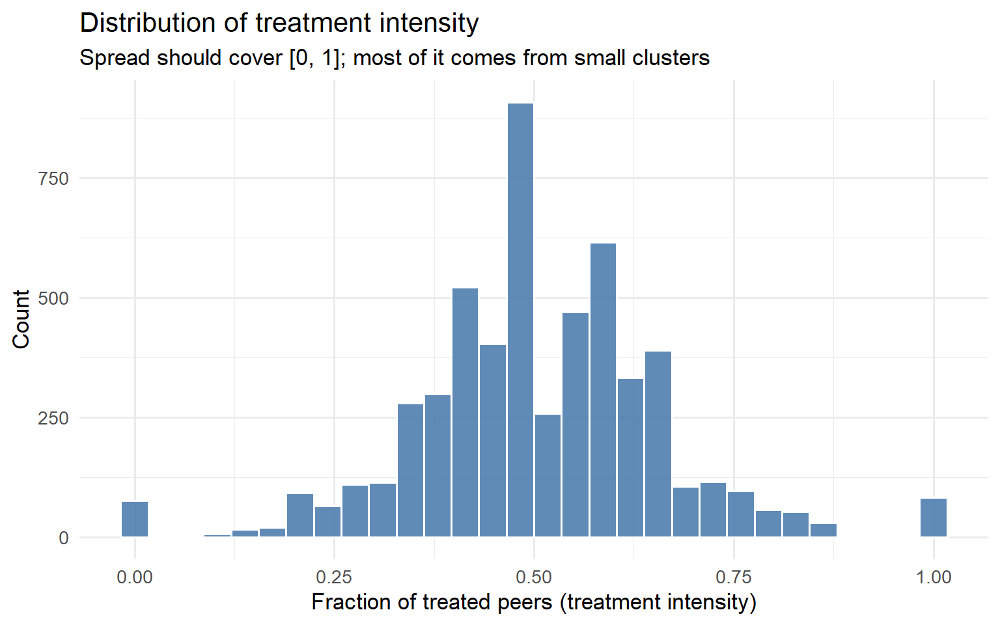
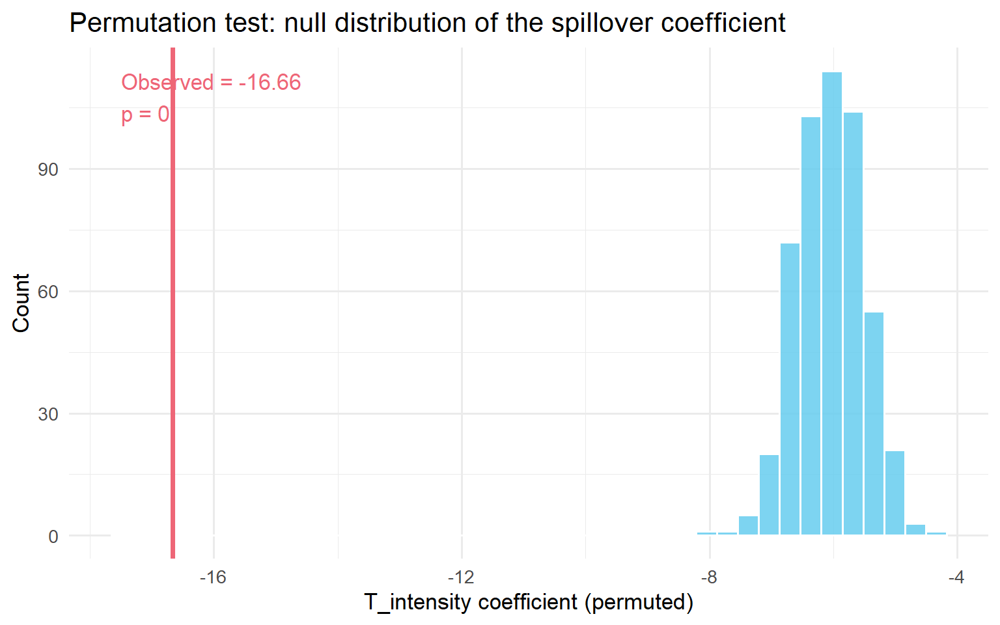
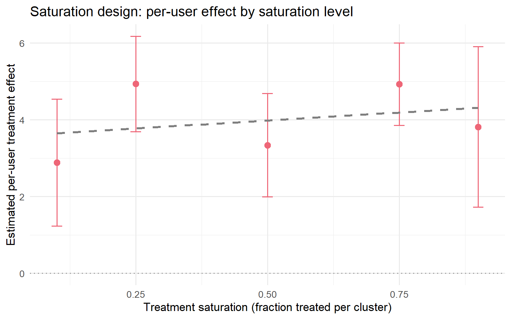
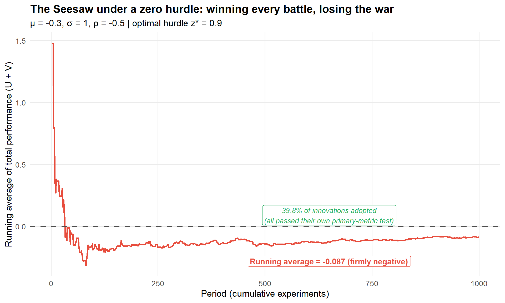
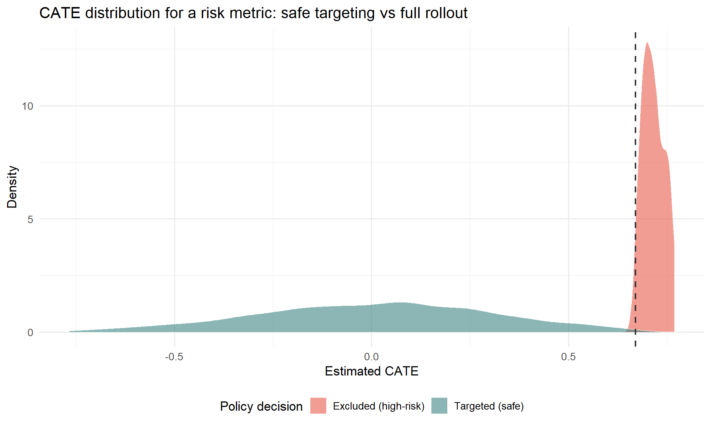
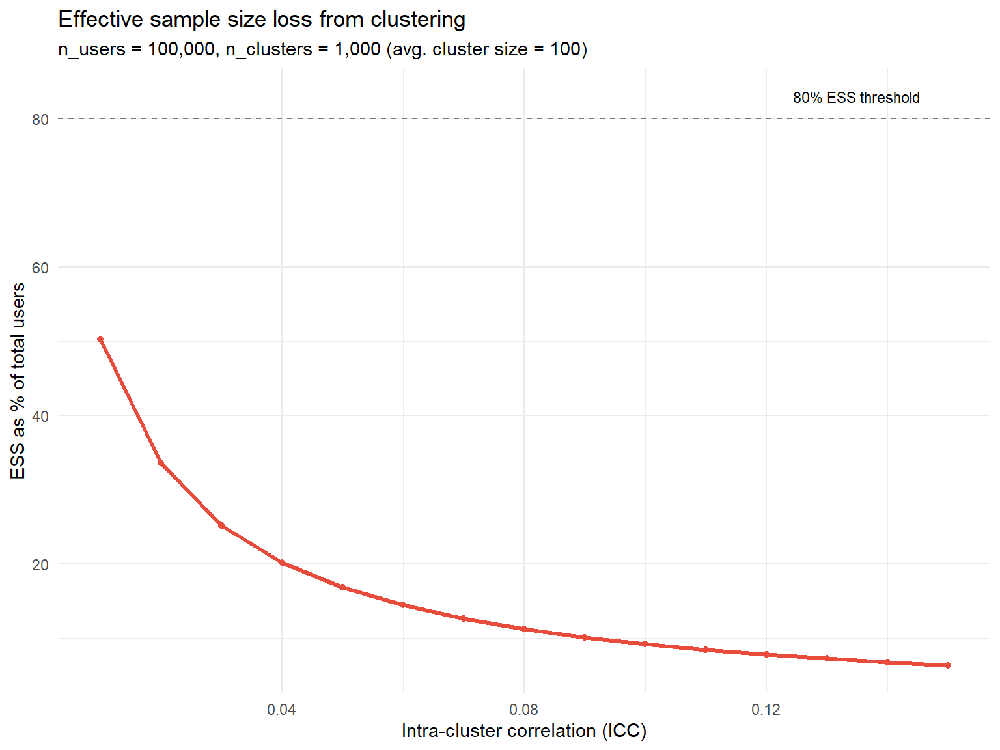
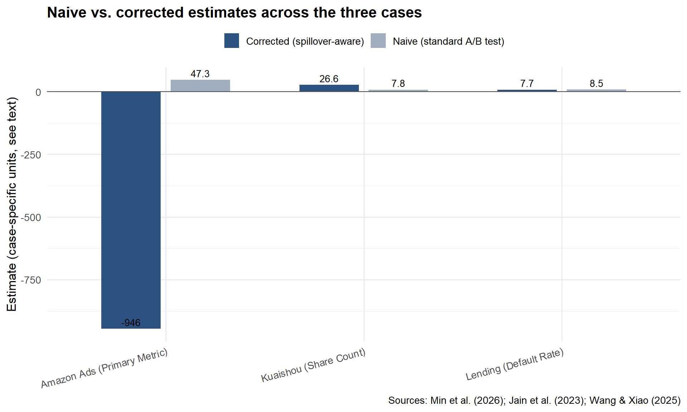

%%{init: {'theme':'base','themeVariables':{'primaryColor':'#EBF5FB','edgeLabelBackground':'#F8F9FA'}}}%%
flowchart TD
A["Do users/units interact,<br/>or share a metric externality?"] --> B["Negative spillover<br/>(competition)"]
A --> C["Positive spillover<br/>(contagion)"]
A --> D["Cross-metric spillover<br/>(the Seesaw)"]
B --> B1["Ads auctions, search ranking,<br/>shared inventory"]
C --> C1["Sharing, messaging,<br/>network effects"]
D --> D1["Conversion up, risk up,<br/>on the SAME population"]
style A fill:#3498DB,color:#FFFFFF
style B fill:#E74C3C,color:#FFFFFF
style C fill:#27AE60,color:#FFFFFF
style D fill:#F39C12,color:#FFFFFF
A/B Testing with Spillovers: A Runbook
causal inference
A/B testing
network effects
spillovers
R
The practical companion to ‘When A/B Tests Lie’: a step-by-step path from detection to design to estimator for experiments where units can contaminate each other, with full R code.
Who this is for, and how to use it
A couple of weeks ago I wrote When A/B Tests Lie: Spillovers, Interference, and SUTVA Violations, a long-form walkthrough of why the Stable Unit Treatment Value Assumption (SUTVA) breaks down on modern platforms, and the full toolkit for detecting, designing around, and correcting for it. If you read that post and walked away convinced spillovers are a real risk for your experiments, but not entirely sure what to actually open on a Monday morning, this post is for you.
You know how to run an A/B test. You know what a p-value is, you’ve shipped things based on a green metric, you’ve probably also been burned once by a launch that “won” the test and did nothing in production.
This post is for the moment you suspect that second thing happened because of interference: your treatment group and your control group are not actually isolated from each other. Users share content with each other. Advertisers compete for the same auctions. Sellers compete for the same search slots. When that happens, the textbook difference-in-means stops measuring what you think it measures, and no amount of larger sample size fixes it.
This is not a theory post, that one’s already written. This is a runbook. Each step tells you what to check, how to check it, what the result means, and what to do next, with the minimum theory needed to use each tool correctly and not a derivation more. Follow it top to bottom on your own experiment and you will end up with: a diagnosis of whether spillovers are a problem for you, a design that contains them if they are, and an estimator that gives you a defensible number to take to a launch decision. Wherever a step compresses something that has a full proof, simulation, or case-study writeup behind it, there’s a link to the relevant section of the longer post, so you can go deep on exactly the piece you need and skip the rest.
Five steps:
- Decide whether you actually have a spillover problem, and which of the three kinds it is.
- Detect it in your own data, with concrete diagnostics you can run this afternoon.
- Design an experiment that contains it, matched to your mechanism.
- Estimate the corrected effect after the fact, if a redesign isn’t an option.
- Validate and report, so the number you hand to your PM doesn’t quietly fall apart under scrutiny.
Three real production cases run through the whole runbook as worked examples: a short-video platform (Kuaishou), an ads marketplace (Amazon), and a consumer lender. Whenever a step is abstract, one of these three makes it concrete. The full case studies, with every number and robustness check, are written up in Chapter 9 of the companion post.
Step 1: Decide: Do you actually have a spillover problem?
Every A/B test rests on one assumption that almost nobody writes down: SUTVA, the Stable Unit Treatment Value Assumption. It says your outcome depends only on your treatment assignment, not on anyone else’s. Rubin (1980) formalised it as Y_i = y_i(Z_i): your potential outcome is a function of your own assignment, full stop. (For the full formalisation, including the three estimands worth keeping distinct and what a misspecified exposure mapping does to identification, see Sections 1.1–1.2 of the companion post.)
This holds by default when your users genuinely don’t interact: you test a checkout button colour, User A’s screen has no way of reaching User B’s purchase decision. Kohavi, Tang, and Xu (2020) note that most classic web experimentation lives exactly here, by product design rather than luck.
It breaks the moment any of the following is true for your product:
- Users share content with each other (feeds, messaging, sharing buttons, reactions).
- Units compete for a finite shared resource (ad auctions, search ranking slots, delivery inventory, driver supply).
- One metric’s gain is paid for on a different metric you’re not looking at (conversion vs. risk, engagement vs. retention).
If none of these apply, SUTVA is fine, run your standard test, and you can stop reading. If any of them apply, you have one (or more) of three structurally different problems, and which one determines everything downstream (the diagnostic, the fix, the estimator). Get this step wrong and you’ll apply the right tool to the wrong failure.
The three kinds of spillover
Kind 1: Negative spillover (competition). Your treated units win at the expense of your control units, because they’re fighting over something finite. Treated advertisers outbid control advertisers for the same keyword. Treated drivers take rides that control drivers would otherwise have gotten. The result: your naive estimate is too high, because your control group’s baseline has been artificially depressed by the very treatment you’re testing.
The textbook case: at Amazon, a budget-recommendation feature for advertisers looked like a small, non-significant positive result under standard advertiser-level randomisation (Jain et al., 2023). Once they accounted for auction competition, the real effect at full rollout was −946, about 13% of the control group’s mean, in the opposite direction. A naive launch decision would have shipped something that destroys revenue. (Full case study →)
Kind 2: Positive spillover (contagion). Your treated units help your control units, because they share, recommend, or otherwise leak value across the boundary. A user who shares more (because they’re treated) sends that content to friends who are in control. The result: your naive estimate is too low, because your control group’s baseline got an uninvited boost from the treatment.
The textbook case: at Kuaishou, a sharing feature showed a +7.8% lift in Share Count under standard user-level randomisation. Once they contained the spillover with cluster randomisation, the real lift was +26.6%, 3.4x larger (Min et al., 2026). Worse: a 7-day retention effect that looked statistically insignificant (p = 0.484) under the naive design turned out to be real and significant (p < 0.01) once spillover was contained. The naive test would have shelved a feature that genuinely worked. (Full case study →)
Kind 3: Cross-metric spillover (the Seesaw). This one is different in kind, not just in sign. Your primary metric is measured perfectly correctly: no bias, valid p-value, calibrated confidence interval. The problem is that your “win” on that metric quietly costs you on a different metric nobody’s dashboard is showing you in the same review. Li, Luo, and Zhang (2025) call this seesaw experimentation: you adopt every innovation that’s a win on its primary metric, and your overall business health declines anyway, because each win has a hidden cost elsewhere. (The formal model, the sufficient condition for the Seesaw to occur, and the derivation of the hurdle rate used in Step 3 below are in Section 2.3 of the companion post.)
The textbook case: a consumer lender ran promotions that lifted loan conversion by +12.3 percentage points. Correctly measured, no bias. Also correctly measured, on a metric nobody checked in the same dashboard: 60-day default went up +1.8 percentage points (Wang and Xiao, 2025). The promotion was recruiting riskier borrowers. The test wasn’t wrong. The decision rule that ignored a second metric was. (Full case study →)
ImportantWhy this distinction matters before you do anything else
Kinds 1 and 2 are estimation failures: the number itself is wrong, and the fix is experimental design (Step 3) or a post-hoc estimator (Step 4).
Kind 3 is an objective failure: the number is right, but you’re optimising the wrong thing. No amount of cluster randomisation fixes a Seesaw, because there’s no cross-unit contamination to contain. The fix is a decision rule: a hurdle rate on top of the metric you already trust (covered in Step 3, design track C).
If you misdiagnose which kind you have, you’ll spend two weeks building social graph clusters to fix a problem that was never about units talking to each other.
| Kind | Naive estimate is… | Mechanism | Fix lives in |
|---|---|---|---|
| Negative spillover | Too high | Treated units take resources from control units | Design (cluster on competition graph) or post-hoc regression |
| Positive spillover | Too low | Treated units pass benefit to control units | Design (cluster on social graph) or post-hoc regression |
| Cross-metric (Seesaw) | Correct, but incomplete | Same population, two metrics, hidden externality | Decision rule (hurdle rate), not redesign |
Your action at the end of Step 1: write down, in one sentence, which kind of spillover you’re worried about and through what specific mechanism (e.g. “advertisers in the same keyword auction” or “users sharing video content with followers”). You’ll need this sentence in every subsequent step. If you genuinely don’t know yet, Step 2 will tell you.
Step 2: Detect: find out if it’s actually happening in your data
You don’t need a new experiment to start this step. Everything here works on data you already have, today, from an experiment that’s running or one that already finished.
Five-minute warning signs
Before running anything formal, check whether your experiment shows any of these patterns. Any one of them is a reason to keep going to the formal diagnostics below.
Sign 1: A guardrail metric moves the wrong way for no obvious reason. Your primary metric is up, and a metric that’s usually unrelated moves in the opposite direction at the same time. This is the signature of a Seesaw (Kind 3): two metrics that are normally uncorrelated start moving in lockstep, in opposite directions, only during your test.
Sign 2: Local lift doesn’t add up to global lift. Two regions or segments each show a +6% lift individually, but the combined effect across both is +2%. This usually means the segments are competing with each other for the same limited thing (attention, auction wins, inventory), which points to Kind 1.
Sign 3: The effect fades as you roll out more traffic. Large effect at 5% traffic, smaller at 25%, smaller still at 50%, gone at 100%. This is the single cleanest signature of negative spillover (Kind 1) driven by resource competition. If you’ve ever shipped something that “won the A/B test and did nothing in production,” this is very likely what happened.
TipThe cheapest diagnostic you have: just look at the rollout curve
If you can phase your rollout (10%, then 25%, then 50%), plot the per-user effect against the treated fraction.
Code
library(dplyr)
library(tibble)
library(ggplot2)
set.seed(7)
results <- tibble(
treatment_fraction = rep(c(0.10, 0.25, 0.50, 0.75, 1.00), each = 2000),
treatment = rbinom(10000, 1, rep(c(0.10, 0.25, 0.50, 0.75, 1.00), each = 2000)),
outcome = NA_real_
) %>%
mutate(outcome = 50 + 8 * treatment - 6 * treatment_fraction * treatment + rnorm(n(), 0, 10))
results %>%
group_by(treatment_fraction) %>%
summarise(
effect = mean(outcome[treatment == 1]) - mean(outcome[treatment == 0])
) %>%
ggplot(aes(x = treatment_fraction, y = effect)) +
geom_point() + geom_line() +
labs(title = "Effect vs. treatment fraction",
y = "Estimated ATE", x = "Treatment fraction")
Effect shrinking as the treated fraction grows → negative spillover (Kind 1). Effect growing as the treated fraction grows → positive spillover (Kind 2, network effects kicking in as more of the network is treated).
Sign 4: Two metrics that used to move together, don’t anymore. If two KPIs correlate at ρ = 0.72 historically and drop to ρ = 0.31 during your test, something is disrupting the normal relationship between them, and it’s worth a closer look regardless of which kind you suspect.
If you suspect competition (Kind 1): the Treatment Intensity regression
This is the method Amazon used to catch the −946 reversal. It works on any experiment that was simple advertiser/seller/user-level randomisation, as long as you can define clusters of units that compete with each other, even retroactively, after the experiment ended. (For the identification assumptions behind this method and how it contrasts with the textbook exposure-mapping approach, see Sections 4.2 and 6.3 of the companion post.)
Step 1: define your competition clusters. This has to come from your actual business mechanism, not an administrative convenience like zip code. The table below gives you the mapping for common settings.
| Setting | What causes interference | What your cluster should be |
|---|---|---|
| Ad auctions | Advertisers bid on the same keywords | Keyword-level clusters (e.g. advertiser-keyword bipartite graph, spectral co-clustering) |
| Marketplace search | Sellers compete for the same ranking slots | Category-level clusters |
| Ride-sharing | Drivers compete for the same ride requests | Geographic zones |
| Content feeds | Posts compete for impression slots | Content-topic clusters |
Step 2: compute each unit’s treatment intensity. For unit i in cluster j of size N_j, treatment intensity is the fraction of other units in the cluster that are treated:
T^{\text{intensity}}_{ij} = \frac{\sum_{a \neq i} T_{aj}}{N_j - 1}
Unit i is deliberately excluded from its own denominator, otherwise your own treatment status would mechanically correlate with your own intensity score.
NoteYou need small clusters for this to work
Under 50/50 randomisation in a cluster of 1,000 units, treatment intensity sits very close to 0.5 for almost everyone, so there’s no variation to identify anything from. The identifying power of this method comes entirely from your small clusters, where intensity can swing from 0 to 1. This also means whatever spillover coefficient you estimate is best validated within that small-cluster regime, and you should be cautious extrapolating it to your largest clusters.
Step 3: run the regression.
Y_{ij} = \alpha + \beta \, T_{ij} + f\!\left(T^{\text{intensity}}_{ij}\right) + g\!\left(N_j\right) + \theta \, Y^{0}_{ij} + \epsilon_{ij}
- \beta on
treatis your direct effect: what a standard A/B test would have reported. - f(\cdot) on
treat_intensityis the spillover effect. If it’s statistically significant, SUTVA is violated, full stop. - g(N_j) controls for cluster size; leave this out and you’ll confound cluster-size effects with spillover.
- Y^0_{ij} is the pre-period value of the outcome, included purely for precision.
- Cluster your standard errors at the cluster level, not the unit level. Skip this and you’re not just biased, your confidence intervals stop being valid probability statements (Eckles, Karrer, and Ugander, 2017).
The Flywheel Effect (what you’d actually get if everyone in a cluster were treated, i.e. a full rollout) is \beta + f(1). This is the number that should drive your launch decision, not \beta alone.
Code
library(dplyr)
library(tidyr)
library(tibble)
library(purrr)
library(ggplot2)
library(sandwich)
library(lmtest)
set.seed(42)
n_clusters <- 500
cluster_sizes <- sample(2:20, n_clusters, replace = TRUE)
data <- map_dfr(seq_len(n_clusters), function(j) {
n_j <- cluster_sizes[j]
tibble(
user_id = seq_len(n_j),
cluster_id = j,
N_cluster = n_j,
treatment = rbinom(n_j, 1, 0.5),
pre_outcome = rnorm(n_j, mean = 100, sd = 20)
)
}) %>%
group_by(cluster_id) %>%
mutate(
treated_peers = sum(treatment) - treatment,
T_intensity = if_else(N_cluster > 1, treated_peers / (N_cluster - 1), 0),
outcome = pre_outcome
+ 10 * treatment
- 15 * T_intensity
+ rnorm(n(), 0, 10)
) %>%
ungroup()
ggplot(data, aes(x = T_intensity)) +
geom_histogram(bins = 30, fill = "#4477AA", colour = "white", alpha = 0.85) +
labs(
title = "Distribution of treatment intensity",
subtitle = "Spread should cover [0, 1]; most of it comes from small clusters",
x = "Fraction of treated peers (treatment intensity)",
y = "Count"
) +
theme_minimal(base_size = 13)
Code
model_spillover <- lm(
outcome ~ treatment + T_intensity + N_cluster + pre_outcome,
data = data
)
coeftest(model_spillover, vcov = vcovCL, cluster = ~cluster_id)
t test of coefficients:
Estimate Std. Error t value Pr(>|t|)
(Intercept) 0.2687508 0.9136813 0.2941 0.7687
treatment 9.5689984 0.2675565 35.7644 <2e-16 ***
T_intensity -16.6602159 0.9043168 -18.4230 <2e-16 ***
N_cluster 0.0189706 0.0290562 0.6529 0.5139
pre_outcome 1.0052489 0.0064268 156.4155 <2e-16 ***
---
Signif. codes: 0 '***' 0.001 '**' 0.01 '*' 0.05 '.' 0.1 ' ' 1Step 4: validate before you trust it. Three checks, all cheap to run.
Placebo test: regress your pre-period outcome on treatment intensity. You should get nothing. If treatment intensity predicts something that happened before the experiment even started, your intensity measure is picking up a confound, not a spillover.
Permutation test: shuffle treatment status within clusters (don’t touch cluster membership), re-run the regression, repeat ~500 times. Your observed spillover coefficient should sit far in the tail of this null distribution.
Code
set.seed(99)
n_perms <- 500
perm_coefs <- replicate(n_perms, {
perm_data <- data %>%
group_by(cluster_id) %>%
mutate(treatment = sample(treatment)) %>%
mutate(
treated_peers = sum(treatment) - treatment,
T_intensity = if_else(N_cluster > 1, treated_peers / (N_cluster - 1), 0)
) %>%
ungroup()
coef(lm(outcome ~ treatment + T_intensity + N_cluster + pre_outcome,
data = perm_data))["T_intensity"]
})
observed_coef <- coef(model_spillover)["T_intensity"]
p_perm <- mean(abs(perm_coefs) >= abs(observed_coef))
ggplot(data.frame(coef = perm_coefs), aes(x = coef)) +
geom_histogram(bins = 40, fill = "#66CCEE", colour = "white", alpha = 0.85) +
geom_vline(xintercept = observed_coef, colour = "#EE6677",
linewidth = 1.4, linetype = "solid") +
annotate("text",
x = observed_coef * 1.05,
y = Inf,
label = paste0("Observed = ", round(observed_coef, 2),
"\np = ", round(p_perm, 3)),
vjust = 1.5, hjust = 0, size = 4.5, colour = "#EE6677") +
labs(
title = "Permutation test: null distribution of the spillover coefficient",
x = "T_intensity coefficient (permuted)",
y = "Count"
) +
theme_minimal(base_size = 13)
Density check: plot the distribution of T^{\text{intensity}}_{ij}. If it’s a spike at 0.5 with no spread, you don’t have enough variation to identify spillovers this way, so go back and build smaller, more granular clusters.
This is exactly the path Amazon followed: 111,305 advertisers, 3,197 clusters built from an advertiser-keyword bipartite graph. The direct effect was +47.26 (not significant). The spillover coefficient was −993.25 (p < 0.01), twenty times the direct effect, in the opposite direction. The placebo test was null on all nine metrics they checked. The permutation test put the observed coefficient at p = 0.006. That’s what convinced them it was real, not noise.
If you suspect contagion (Kind 2): the WGSR metric
If your mechanism is social (sharing, messaging, following), the Treatment Intensity regression above still works, but there’s a more direct diagnostic built specifically for social graphs: Within-Group Share Ratio (WGSR), from Min et al. (2026). (The full derivation, the linear relationship between WGSR and ATE bias, and how Kuaishou used it pre/during/post-experiment are in Section 4.3 of the companion post.)
\text{WGSR} = \frac{\text{interactions within the same experimental group}}{\text{total interactions}}
Under perfect SUTVA, WGSR = 1.0: every interaction stays inside its own arm. Under plain user-level randomisation with no network structure, WGSR ≈ 0.5, a coin flip: half of all interactions cross the treatment/control boundary.
At Kuaishou, that’s exactly what they found under standard user-level randomisation: WGSR = 49.68%. After switching to cluster-based randomisation (covered in Step 3), WGSR jumped to 90.39%. Min et al. found a near-linear relationship (R² > 0.999 in their setting) between WGSR and the resulting bias in your ATE, which means you can use WGSR not just to detect the problem but to roughly calibrate how much of it you’re absorbing.
Code
library(dplyr)
library(ggplot2)
library(igraph)
set.seed(123)
n_users <- 1000
g_net <- sample_smallworld(dim = 1, size = n_users, nei = 5, p = 0.1)
V(g_net)$group_UBR <- sample(c("Treatment", "Control"), n_users, replace = TRUE)
compute_wgsr <- function(graph, group_attr) {
groups <- vertex_attr(graph, group_attr)
el <- as_edgelist(graph, names = FALSE)
all_edges <- rbind(el, el[, c(2, 1)])
sender_group <- groups[all_edges[, 1]]
receiver_group <- groups[all_edges[, 2]]
treatment_sends <- sender_group == "Treatment"
within_group <- treatment_sends & (receiver_group == "Treatment")
across_groups <- treatment_sends & (receiver_group %in% c("Treatment", "Control"))
sum(within_group) / sum(across_groups)
}
wgsr_ubr <- compute_wgsr(g_net, "group_UBR")
cat(sprintf("WGSR under plain user-level randomisation: %.3f\n", wgsr_ubr))WGSR under plain user-level randomisation: 0.495
TipRule of thumb once you have a WGSR number
Below 0.7: user-level randomisation is very likely producing materially biased estimates for this experiment, so go to Step 3 and pick a design that contains the spillover. Above 0.85: you’ve probably captured most of the available bias reduction even before doing anything fancy; the remaining gap is a refinement, not the main event.
Use WGSR three ways: before the experiment (simulate your proposed randomisation against the historical interaction graph and estimate what WGSR you’d get); during the experiment (monitor it daily; a sudden drop means the boundary is eroding); after the experiment (compare WGSR across similar past experiments to calibrate how much you should trust the naive number).
If you’re not sure which kind: A/A tests and saturation designs
The spillover-aware A/A test. Run (or look back at) an A/A test and compare the correlation structure between your key metrics in that period versus the A/B period. If two metrics that were uncorrelated in the A/A suddenly move in opposite directions in the A/B, that’s a Seesaw signal (Kind 3), so go to Step 3, design track C. The A/A test doubles as variance calibration: if its observed variance is bigger than your formula predicts, your A/B standard errors are too small regardless of spillovers.
Saturation design. If you can run a small pilot, randomise treatment saturation across independently-assigned clusters (some clusters at 10% treated, some at 50%, some at 90%) and look at the per-user effect by saturation level.
Code
library(dplyr)
library(tidyr)
library(tibble)
library(ggplot2)
set.seed(2024)
saturation_levels <- c(0.10, 0.25, 0.50, 0.75, 0.90)
n_clusters_per_level <- 10
cluster_size <- 100
clusters <- tibble(
cluster_id = 1:(length(saturation_levels) * n_clusters_per_level),
saturation = rep(saturation_levels, each = n_clusters_per_level)
)
sat_data <- clusters %>%
rowwise() %>%
mutate(
users = list(tibble(
user_id = seq_len(cluster_size),
treatment = rbinom(cluster_size, 1, saturation),
pre_outcome = rnorm(cluster_size, mean = 50, sd = 10)
))
) %>%
unnest(users) %>%
ungroup() %>%
mutate(
outcome = 50
+ 4 * treatment
+ (-3) * saturation
+ 0.6 * (pre_outcome - 50)
+ rnorm(n(), sd = 6)
)
effects_by_saturation <- sat_data %>%
group_by(saturation, cluster_id) %>%
summarise(
tau = mean(outcome[treatment == 1]) - mean(outcome[treatment == 0]),
.groups = "drop"
) %>%
group_by(saturation) %>%
summarise(
tau_hat = mean(tau),
se = sd(tau) / sqrt(n()),
.groups = "drop"
)
ggplot(effects_by_saturation, aes(x = saturation, y = tau_hat)) +
geom_point(size = 3, colour = "#EE6677") +
geom_errorbar(
aes(ymin = tau_hat - 1.96 * se, ymax = tau_hat + 1.96 * se),
width = 0.02, colour = "#EE6677"
) +
geom_smooth(method = "lm", se = FALSE, linetype = "dashed", colour = "gray50") +
geom_hline(yintercept = 0, linetype = "dotted", colour = "gray60") +
labs(
title = "Saturation design: per-user effect by saturation level",
x = "Treatment saturation (fraction treated per cluster)",
y = "Estimated per-user treatment effect"
) +
theme_minimal(base_size = 13)
Picking the right diagnostic for your situation
| Your situation | Run this |
|---|---|
| Experiment already running, no cluster data yet | Five-minute warning signs (2.1) + A/A correlation comparison |
| You have cluster data, pre- or post-experiment | Treatment Intensity regression (2.2) + placebo + permutation |
| You have a social graph | WGSR (2.3), before / during / after |
| Planning a brand-new experiment in a spillover-prone product | Saturation design or spatial A/A test, before you launch |
| Suspicious rollout fade-out | Phased rollout plot + saturation curve |
Your action at the end of Step 2: you should now have either (a) a number (a spillover coefficient, a WGSR, a fade-out curve) that confirms a real problem, or (b) confirmation that it’s small enough to ignore. If (a), go to Step 3 if you can still change the experiment design, or skip straight to Step 4 if the experiment already ran and a redesign isn’t possible.
Step 3: Build an experiment that contains it
There is no free lunch here. Every design below trades bias for variance: containing a spillover always costs you some effective sample size. Your job isn’t to find the design with no trade-off (it doesn’t exist), it’s to find the one whose trade-off fits your business problem. Pick the track that matches the kind you diagnosed in Step 1.
Track A: Negative spillover / competition. Cluster on the competition graph
This is the Amazon playbook. The unit of randomisation moves from “advertiser” to “cluster of advertisers who compete with each other,” so that competitive pressure stays inside one arm instead of leaking across it. The same logic predates tech: Crépon, Duflo, Gurgand, Rathelot, and Zamora (2013) randomised job-placement assistance at the level of local employment areas, precisely so that helping one group of jobseekers wouldn’t just displace jobs away from another group competing in the same labour market.
- Build the graph that actually represents competition: for ads, an advertiser-keyword bipartite graph weighted by shared cost-per-click; for marketplace search, a category co-occurrence graph.
- Use spectral co-clustering (or any clustering method that minimises cross-cluster edges, not just generic community detection) to partition into clusters.
- Randomise treatment at the cluster level, not the unit level.
- Re-run the Treatment Intensity regression above on the resulting data as your confirmatory analysis. You should now see the spillover coefficient shrink or disappear, because most competition is now contained inside one arm.
The trade-off: your effective sample size drops from “number of advertisers” to “number of clusters.” Plan your power calculation around the cluster count, not the unit count, from the start.
Track C: Cross-metric spillover (the Seesaw). Set a hurdle rate, not a new design
If Step 1/2 told you this is a Seesaw, stop thinking about clustering: there’s no cross-unit contamination to contain, so a redesign doesn’t apply. The fix is a decision rule, derived in closed form by Li, Luo, and Zhang (2025).
The idea. Instead of adopting every change that clears a zero threshold on your primary metric, require it to clear a positive hurdle z. The optimal hurdle, in the symmetric case where both metrics have the same mean \mu and standard deviation, is:
z^* = \frac{\rho - 1}{\rho + 1}\,\mu
where \rho is the correlation between your primary and secondary metric, estimated from your historical experiment data.
What this means in practice. If your primary and secondary metrics are strongly positively correlated (\rho \to 1), z^* \to 0: you don’t need a hurdle, a win on one metric is a win on both. If they’re uncorrelated (\rho = 0), z^* = -\mu: set your hurdle equal to the average harm the innovation does to your secondary metric. If they’re strongly negatively correlated (\rho \to -1), z^* \to \infty: at that point, decentralised adoption on the primary metric alone isn’t salvageable with a hurdle, and you need joint measurement instead.
How to estimate \rho and \mu for your own hurdle. Pull your last dozen or so A/B tests in this product area. For each, record the effect on your primary metric and the effect on the metric you suspect is the hidden cost. Compute the correlation between those two columns: that’s your \rho. The mean of the secondary-metric column is your \mu.
Worked example, the consumer-lending case. Wang and Xiao (2025) found promotions lifted conversion by +12.3pp and lifted 60-day default by +1.8pp, both correctly measured, no estimation bias, just two metrics nobody had looked at together. With \mu = -0.3, \sigma = 1, \rho = -0.5 (illustrative parameters from the same family of models):
z^* = \frac{-0.5 - 1}{-0.5 + 1} \times (-0.3) = 0.9
Under a zero hurdle, roughly half of “passing” innovations get adopted, each one individually clearing its primary-metric bar, yet the simulation below shows what happens to overall performance when you track U + V (primary plus secondary) instead of U alone.
Code
library(MASS)
library(ggplot2)
set.seed(2025)
n_periods <- 1000
mu <- -0.3
sigma <- 1
rho <- -0.5
Sigma_mat <- matrix(c(sigma^2, rho * sigma^2,
rho * sigma^2, sigma^2), nrow = 2)
innovations <- mvrnorm(n_periods, mu = c(mu, mu), Sigma = Sigma_mat)
U <- innovations[, 1]
V <- innovations[, 2]
adopted <- U > 0
combined <- ifelse(adopted, U + V, 0)
cum_adopted <- cumsum(adopted)
running_avg <- ifelse(cum_adopted > 0, cumsum(combined) / cum_adopted, NA_real_)
df_seesaw <- data.frame(period = seq_len(n_periods), running_avg = running_avg)
pct_adopted <- round(100 * tail(cum_adopted, 1) / n_periods, 1)
final_avg <- round(tail(running_avg[!is.na(running_avg)], 1), 3)
ggplot(df_seesaw, aes(x = period, y = running_avg)) +
geom_line(colour = "#E74C3C", linewidth = 0.9) +
geom_hline(yintercept = 0, linetype = "dashed", colour = "grey30", linewidth = 0.9) +
annotate("label", x = 650, y = 0.09,
label = paste0(pct_adopted, "% of innovations adopted\n(all passed their own primary-metric test)"),
colour = "#27AE60", size = 3.5, fontface = "italic") +
annotate("label", x = 650, y = -0.28,
label = paste0("Running average = ", final_avg, " (firmly negative)"),
colour = "#E74C3C", size = 4, fontface = "bold") +
labs(
x = "Period (cumulative experiments)",
y = "Running average of total performance (U + V)",
title = "The Seesaw under a zero hurdle: winning every battle, losing the war",
subtitle = paste0("\u03bc = ", mu, ", \u03c3 = ", sigma, ", \u03c1 = ", rho,
" | optimal hurdle z* = 0.9")
) +
theme_minimal(base_size = 13) +
theme(plot.title = element_text(face = "bold"), panel.grid.minor = element_blank())
Pre-register the hurdle, don’t set it after the fact. Setting z^* once you’ve already seen the experiment’s outcome turns a principled threshold into researcher degrees of freedom dressed up as rigour. Estimate \rho and \mu from historical experiments and lock the hurdle in before the next one runs.
This is exactly the move Wang and Xiao (2025) made in the lending case, just implemented as a more granular per-customer policy rather than a single global hurdle. See later in this section, which covers exactly that.
Other design options, and when to reach for them
These don’t replace Tracks A–C; they’re alternatives worth knowing about for specific situations.
Switchback experiments (randomise by time, not by unit: the whole platform runs in one arm for a window, then switches). Useful when interference runs through time more than through other units, e.g. a notification cadence that fatigues users over days. The cost: you trade cross-unit interference for cross-time interference (carryover). Bojinov, Simchi-Levi, and Zhao (2023) show positive carryover biases the naive estimate toward zero and negative carryover can flip its sign. The standard fix is a washout period, discarding the first 15–30 minutes of data after each switch.
Ego-alter designs. Pick a set of influential, well-connected “ego” users, randomise treatment at the ego level, and measure outcomes on both the egos and their “alter” connections. One design, two effects: a direct effect on egos and an indirect (spillover) effect on alters.
Two-sided / bipartite designs. For marketplaces with two distinct sides (senders/receivers, riders/drivers), randomise each side independently, giving you a 2×2 factorial: neither side treated, sender-side only, receiver-side only, both sides treated.
Independent-set designs. Find a subset of units with literally no edges between any pair (an independent set in your interaction graph) and randomise only within it. SUTVA holds exactly for that sample. The catch: finding the maximum independent set is NP-hard, and greedy approximations in dense social graphs often discard 80–90% of your population non-randomly. Best used as a small benchmark to sanity-check your cluster-randomised estimate, not as your primary design.
When randomisation just isn’t possible: synthetic controls. If you can’t randomise at all (you’re rolling out to one market, one region, one big customer), construct a synthetic version of your treated unit from a weighted combination of untreated donor units (Abadie, Diamond, and Hainmueller, 2010). The hidden assumption is that your donor pool is itself unaffected by the treatment. O’Riordan and Gilligan-Lee (2025) propose checking this with a forecasting test: fit each candidate donor’s pre-intervention data, forecast its post-intervention outcome, and compare to what actually happened. Systematic forecast failure signals donor contamination. (More detail →)
Picking your design
%%{init: {'theme':'base','themeVariables':{'primaryColor':'#EBF5FB','primaryTextColor':'#2C3E50','primaryBorderColor':'#3498DB','lineColor':'#3498DB','secondaryColor':'#D5F5E3','tertiaryColor':'#FADBD8'}}}%%
flowchart TD
A["What's your mechanism?"] --> B["Social / network<br/>(Track B)"]
A --> C["Marketplace, two-sided"]
A --> D["Competition for shared resource<br/>(Track A)"]
A --> E["Cross-metric only<br/>(Track C)"]
A --> F["Can't randomise at all"]
B --> B1["Balanced Louvain<br/>+ CUPAC"]
C --> C1["Switchback or<br/>bipartite design"]
D --> D1["Cluster on the<br/>competition graph"]
E --> E1["Pre-register a<br/>hurdle rate z*"]
F --> F1["Synthetic control +<br/>donor-contamination check"]
B1 --> G{"Check WGSR/intensity<br/>after redesign"}
D1 --> G
G -- "Contained" --> H["Proceed to estimate (Step 5)"]
G -- "Still leaking" --> I["Add CUPAC, or<br/>go to Step 4"]
style A fill:#EBF5FB,stroke:#3498DB,stroke-width:2px
style G fill:#FEF9E7,stroke:#F39C12,stroke-width:2px
style H fill:#D5F5E3,stroke:#27AE60,stroke-width:2px
style I fill:#FADBD8,stroke:#E74C3C,stroke-width:2px
Your action at the end of Step 3: you should have either a running (or about-to-launch) experiment with a design that physically contains the spillover, or, for the Seesaw case, a pre-registered hurdle rate ready to apply to the next batch of tests. If your experiment already happened and a redesign genuinely isn’t an option, go straight to Step 4.
Step 4: Fix it after the fact, when redesign isn’t an option
Everything in this step assumes your experiment already ran with plain unit-level randomisation, and you can’t go back and re-run it. You still want a defensible number. This is also where you go if Step 1 told you the spillover is between metrics (the Seesaw), since that case never needed a redesign in the first place. It needs the targeting logic covered later in this step.
The Doubly Robust estimator, adapted for spillovers
The standard DR estimator extends to network interference by conditioning on an exposure mapping E_i, the idea Hudgens and Halloran (2008) introduced to make interference tractable, some summary of how much spillover exposure unit i got (e.g. the treatment intensity from the Step 2 regression, or the fraction of treated friends):
\hat\tau_{DR} = \frac{1}{n}\sum_{i=1}^n \left[ \frac{T_i - \hat e(X_i, E_i)}{\hat e(X_i, E_i)(1 - \hat e(X_i, E_i))} \left(Y_i - \hat m_{T_i}(X_i, E_i)\right) + \hat m_1(X_i, E_i) - \hat m_0(X_i, E_i) \right]
Why bother with the doubly robust version instead of a plain regression: the IPW term corrects your estimate if the outcome model is wrong, and the regression term corrects it if the propensity model is wrong. You only need to get one of the two right. (Full derivation →)
Three practical decisions, in order of how much they matter.
- Choose your exposure mapping before you look at outcomes. This is a substantive choice about your interference mechanism, not a statistical nicety. Get it wrong and you’re not estimating a meaningful quantity at all, you’re estimating something with no clean causal interpretation (more on this below).
- Fit the propensity model with L2-regularised logistic regression or gradient boosting, with cross-fitting. Wang and Xiao (2025) used exactly this combination, L2-regularised logistic regression for propensity and gradient-boosted trees for the outcome model, in the consumer-lending case below.
- Clip propensity scores to [0.01, 0.99] before computing the IPW term. Non-negotiable. Extreme propensity scores blow up your variance for no benefit.
Causal Forests for who gets hurt or helped the most
A single average spillover-adjusted effect tells you whether to ship. It doesn’t tell you whether the effect is uniform or concentrated in a subgroup, and for the Seesaw case in particular, that distinction is the whole game. (More on heterogeneous spillover effects →)
Causal Forests (Athey and Wager, 2019) estimate \tau(x) = \mathbb{E}[Y(1) - Y(0) \mid X = x], the treatment effect as a function of covariates. Add your exposure variable E_i as one of the covariates and you get CATE estimates that vary along both individual characteristics and network exposure simultaneously.
Code
library(grf)
library(dplyr)
library(ggplot2)
set.seed(123)
n <- 5000
X <- matrix(rnorm(n * 5), n, 5)
tau_risk <- 0.02 - 0.3 * X[,2] + 0.1 * X[,4]
W <- rbinom(n, 1, 0.5)
Y_risk <- 0.08 + tau_risk * W + rnorm(n, 0, 0.02)
forest_risk <- causal_forest(X, Y_risk, W, num.trees = 2000, honesty = TRUE, seed = 42)
cate_risk <- predict(forest_risk, X)$predictions
risk_threshold <- quantile(cate_risk, 0.982)
df_eval <- data.frame(
cate_risk = cate_risk,
policy = factor(as.integer(cate_risk <= risk_threshold),
levels = c(0, 1),
labels = c("Excluded (high-risk)", "Targeted (safe)"))
)
ggplot(df_eval, aes(x = cate_risk, fill = policy)) +
geom_density(alpha = 0.55, colour = "white", linewidth = 0.3) +
geom_vline(xintercept = risk_threshold, linetype = "dashed",
colour = "#333333", linewidth = 0.8) +
scale_fill_manual(values = c("Excluded (high-risk)" = "#E74C3C",
"Targeted (safe)" = "#2B7A78")) +
labs(
title = "CATE distribution for a risk metric: safe targeting vs full rollout",
x = "Estimated CATE",
y = "Density",
fill = "Policy decision"
) +
theme_minimal(base_size = 13) +
theme(legend.position = "bottom")
This is the exact step Wang and Xiao (2025) ran on the lending data: a causal forest on 60-day default risk revealed that customers with credit histories under 6 months and borrowing activity across 4+ platforms had consistently elevated default CATE, while customers in the top credit-score quartile or with stable high income had near-zero or negative CATE. That heterogeneity is what makes the targeting policy below possible.
Off-Policy Evaluation with a CVaR safety constraint: the Seesaw fix in practice
This is where the Seesaw stops being an abstract hurdle rate and becomes an actual targeting rule you can ship. Instead of a single global hurdle, you exclude the specific customers whose predicted harm on the secondary metric is too high, using data you already logged, with no new experiment. (Full treatment, with the Switch-DR robustness check →)
Step 1: estimate CATE for both metrics separately (you already did the risk one above; repeat for your primary metric).
Step 2: evaluate candidate policies offline with Doubly Robust OPE.
\hat V^{DR}(\pi) = \frac{1}{n} \sum_{i=1}^n \left[ \hat q_{\pi(X_i)}(X_i) + w_i \cdot (Y_i - \hat q_{T_i}(X_i)) \right], \quad w_i = \frac{\pi(T_i \mid X_i)}{\hat b(T_i \mid X_i)}
This lets you ask “what would my default rate have been under this alternative targeting rule?” using your existing logged experiment data, with no new rollout needed.
Step 3: add a CVaR safety constraint.
\Pi^{safe} = \left\{\pi \in \Pi : \hat R_{risk}(\pi) \leq \gamma \right\}, \quad \hat R_{risk}(\pi) = \text{CVaR}_\alpha\left[Y_{risk} \mid \pi(X)\right]
This caps your policy’s exposure to tail risk, not just its average risk, which matters when the cost of getting the riskiest customers wrong is disproportionate.
Code
forest_outcome <- regression_forest(cbind(X, W), Y_risk, seed = 42)
q_hat_1 <- predict(forest_outcome, newdata = cbind(X, rep(1, n)))$predictions
q_hat_0 <- predict(forest_outcome, newdata = cbind(X, rep(0, n)))$predictions
policy <- as.integer(cate_risk <= risk_threshold)
b_hat <- 0.5
w_i <- (policy * W + (1 - policy) * (1 - W)) / b_hat
w_i_clipped <- pmin(w_i, 20)
q_pi <- ifelse(policy == 1, q_hat_1, q_hat_0)
v_dr_safe <- mean(q_pi + w_i_clipped * (Y_risk - ifelse(W == 1, q_hat_1, q_hat_0)))
v_dr_full <- mean(q_hat_1)
cat(sprintf("Estimated default rate | full rollout: %.4f\n", v_dr_full))Estimated default rate | full rollout: 0.0987Code
cat(sprintf("Estimated default rate | safe policy: %.4f\n", v_dr_safe))Estimated default rate | safe policy: 0.0847Code
cat(sprintf("Relative reduction: %.1f%%\n", 100 * (v_dr_full - v_dr_safe) / v_dr_full))Relative reduction: 14.2%Code
cat(sprintf("Users excluded: %d of %d (%.1f%%)\n",
sum(policy == 0), n, 100 * mean(policy == 0)))Users excluded: 90 of 5000 (1.8%)This is, end to end, what Wang and Xiao (2025) did: the resulting policy excluded just the top 1.8% of customers by predicted risk CATE, took the observed default rate from 8.5% to 7.7% (a 9.7% relative reduction) while holding conversion essentially unchanged. A tiny, surgical exclusion, applied only to the customers the data says are genuinely high-risk, recovered most of the hidden cost without touching the metric the business actually cares about.
Cross-check with Switch-DR. Run the same evaluation with a Switch-DR estimator (which falls back to the model-based term when importance weights get too large) alongside your DR-OPE estimate. Consistency between the two is your robustness check before you trust the policy enough to ship it.
If your exposure mapping itself might be wrong: causal network motifs and the Hajek estimator
Everything in 4.1–4.3 depends on having picked a reasonable exposure mapping (treatment intensity, fraction of treated friends, etc.). For social networks specifically, a single number like “fraction of treated friends” can be too blunt: two users with the same fraction of treated friends can have very different local network structures. One might have those friends in a tight cluster (echo chamber), another spread across disconnected groups (structural diversity), and these can have different effects.
Causal network motifs (Yuan, Altenburger, and Kooti, 2021) fix this by characterising not just how many of your neighbours are treated, but how they’re connected to each other, using network motifs (dyads, open triads, closed triads, open tetrads) labelled with treatment status. A tree-based algorithm then automatically discovers which of these labelled motifs actually matter for your outcome, rather than you having to guess the right exposure condition in advance. (Full method, with the Facebook “Care” reaction case study →)
This matters in practice, not just in theory. In Facebook’s “Care” reaction rollout, the naive difference-in-means gave a global treatment effect estimate of −0.0293. Using only “fraction of treated friends” (a dyad-only exposure mapping) gave −0.0174, moving further from the truth, not closer. Using the full causal network motif approach gave −0.0414: the actual effect was roughly 29% larger in magnitude than the naive estimate suggested, and the naive comparison had been masking it.
WarningA misspecified exposure mapping doesn’t just add noise, it can make things worse
The dyad-only estimate in the Care reaction case moved away from the right answer relative to the naive estimate. If you’re going to commit to an exposure mapping more sophisticated than treatment intensity, validate it the way Yuan et al. did: check it against a baseline (no exposure mapping at all) and confirm it actually moves in the right direction, not just that it’s more sophisticated-looking.
When estimating average potential outcomes under any exposure mapping, prefer the Hajek estimator over the unbiased-but-high-variance Horvitz-Thompson estimator, unless your sample is very small or your exposure conditions are evenly populated everywhere (full comparison of the two →):
\hat\tau_{Hajek}(d, d') = \frac{\displaystyle\sum_i \frac{Y_i \cdot \mathbf{1}(E_i = d)}{\pi_i(d)}}{\displaystyle\sum_i \frac{\mathbf{1}(E_i = d)}{\pi_i(d)}} - \frac{\displaystyle\sum_i \frac{Y_i \cdot \mathbf{1}(E_i = d')}{\pi_i(d')}}{\displaystyle\sum_i \frac{\mathbf{1}(E_i = d')}{\pi_i(d')}}
The small bias it introduces is usually a good trade for the variance reduction, the same logic Yuan et al. (2021) and Aronow and Samii (2017) both rely on. The inclusion probabilities \pi_i(d) are rarely solvable in closed form, so estimate them by Monte Carlo, re-running your randomisation procedure many times and recording how often unit i ends up in exposure condition d.
This is the most setup-intensive option in this whole runbook. Reach for it only when your business decision genuinely hinges on getting the exposure mapping right, not just on detecting that some spillover exists. Step 2’s diagnostics, plus a treatment-intensity-style DR estimate from earlier in this step, are enough for the large majority of launch decisions.
Your action at the end of Step 4: you should now have a single defensible number, a spillover-adjusted ATE or a targeting policy with an estimated effect under a safety constraint, ready to take into Step 5.
Step 5: Validate and report. Make the number survive scrutiny
How much rigour does this particular decision actually need?
Not every launch decision needs the full pipeline from Steps 2–4. Match your effort to the stakes.
Level 1: an afternoon’s work. Run your standard user-level test. Post-hoc, compute WGSR or treatment intensity using whatever cluster or network data you already have lying around. If the diagnostic comes back low (WGSR comfortably below 0.85, or a small, non-significant intensity coefficient), report the naive ATE with a one-line caveat. This alone puts you ahead of most teams shipping on faith.
Level 2: a day or two. If Level 1 shows meaningful spillover, re-cluster with something simple, geographic regions or random buckets of users hashed into ~1,000 groups, and re-run. Even naive random clustering tends to push WGSR meaningfully above 0.5. If it clears 0.85, you’re done.
Level 3: one to two weeks. Reserve this for features that are the network mechanism itself: a new sharing feature, a recommender change that drives social contagion, a pricing algorithm that reshuffles auction dynamics. This is where the full Balanced Louvain / spectral co-clustering plus CUPAC pipeline from Step 3 earns its cost.
NoteThe first step is most of the value
Going from no clustering to any clustering captures most of the available bias reduction. Going from Balanced Louvain at 90% WGSR to 96% WGSR is a refinement. Going from 50% to 85% is what actually moves your bias estimate. Don’t let “is this clustering optimal” block “have I clustered at all.”
When it’s genuinely fine to skip all of this
Cluster randomisation buys you less bias at the cost of more variance, formally:
\text{DEFF} = 1 + (m - 1) \cdot \text{ICC}
where m is your average cluster size and ICC is the intra-cluster correlation. Larger clusters and higher ICC both inflate your design effect, meaning your effective sample size shrinks faster than your nominal one.
Code
calculate_ess <- function(n_users, n_clusters, icc) {
m <- n_users / n_clusters
deff <- 1 + (m - 1) * icc
n_users / deff
}
n_users <- 100000
n_clusters <- 1000
icc_values <- seq(0.01, 0.15, by = 0.01)
ess_results <- sapply(icc_values, function(icc) calculate_ess(n_users, n_clusters, icc))
plot_data <- data.frame(
ICC = icc_values,
ESS_Percent = (ess_results / n_users) * 100
)
ggplot(plot_data, aes(x = ICC, y = ESS_Percent)) +
geom_line(color = "#E74C3C", linewidth = 1.2) +
geom_point(color = "#E74C3C") +
labs(
title = "Effective sample size loss from clustering",
subtitle = "n_users = 100,000, n_clusters = 1,000 (avg. cluster size = 100)",
x = "Intra-cluster correlation (ICC)",
y = "ESS as % of total users"
) +
theme_minimal() +
geom_hline(yintercept = 80, linetype = "dashed", alpha = 0.5) +
annotate("text", x = 0.135, y = 83, label = "80% ESS threshold", size = 3)
Three situations where accepting the bias is the rational call:
- The effect is enormous. A naive ATE of +50% with an estimated bias of ten percentage points doesn’t change your launch decision either way.
- The cost of delay is high. If building the interaction graph and running Balanced Louvain costs two weeks of engineering time, and that delay costs more in foregone revenue than the bias you’d correct, shipping on the naive estimate while monitoring long-term metrics can be the right call.
- ICC is near zero. If ICC < 0.01, clustering wasn’t going to buy you much bias reduction either, which suggests your spillovers are probably small to begin with.
WarningThis exception does not apply to auctions, ranking, or shared inventory
In competitive settings, spillovers can flip the sign of your effect, not just its magnitude. That’s exactly what happened in the Amazon case. None of the three “it’s fine to skip this” scenarios above apply by default once units are competing for a shared resource. Test for spillovers explicitly, every time, in this category.
The full checklist
Before the experiment. Map the interference mechanism (social, competitive, or resource-based): this single decision determines everything else. Choose your randomisation unit accordingly: user, cluster (social or competitive graph), time (switchback), or bipartite (two-sided marketplace). Define your spillover diagnostic in advance: WGSR ≥ 0.85 for social, sufficient treatment-intensity variation for competitive. If cross-metric spillover is plausible, pre-register your hurdle rate z^* now, before you see results.
During the experiment. Monitor your diagnostic daily: is WGSR holding above 0.85, is treatment intensity varying enough across clusters. Watch guardrail metrics for the Seesaw signature: primary up, secondary down, on metrics that don’t usually move together.
After the experiment. Run the placebo test (regress pre-period outcomes on your spillover diagnostic; it should come back null). Apply the right estimator if bias shows up: DR when you’re unsure whether your propensity or outcome model is right, Hajek with Monte Carlo inclusion probabilities for exposure-mapping designs, CUPAC for variance recovery after cluster randomisation. Always report both the naive ATE and the spillover-adjusted ATE to stakeholders. The gap between the two is the actual price tag of the interference you found, so don’t let it disappear from the writeup.
The three cases, side by side
| Case | Mechanism | Naive estimate | Corrected estimate | What actually fixed it |
|---|---|---|---|---|
| Kuaishou (Share Count) | Positive spillover, social sharing | +7.76% | +26.61% | Balanced Louvain clustering + CUPAC |
| Amazon Ads (primary metric) | Negative spillover, auction competition | +47.26 (not significant) | −945.99 (significant) | Treatment Intensity regression on competition graph |
| Consumer lending (default rate) | Cross-metric, conversion vs. risk | 8.5% baseline default | 7.7% under targeting | CATE-based exclusion + CVaR-constrained OPE |
Code
library(ggplot2)
library(dplyr)
df_summary <- data.frame(
Case = c("Kuaishou (Share Count)", "Amazon Ads (Primary Metric)", "Lending (Default Rate)"),
Naive_Estimate = c(7.76, 47.26, 8.5),
True_Estimate = c(26.61, -945.99, 7.7)
)
df_long <- df_summary %>%
tidyr::pivot_longer(cols = c(Naive_Estimate, True_Estimate),
names_to = "Estimate_Type", values_to = "Value") %>%
mutate(Estimate_Type = recode(Estimate_Type,
"Naive_Estimate" = "Naive (standard A/B test)",
"True_Estimate" = "Corrected (spillover-aware)"))
ggplot(df_long, aes(x = Case, y = Value, fill = Estimate_Type)) +
geom_col(position = position_dodge(width = 0.7), width = 0.6) +
geom_hline(yintercept = 0, color = "grey30", linewidth = 0.4) +
geom_text(aes(label = round(Value, 1)),
position = position_dodge(width = 0.7), vjust = -0.4, size = 3.5) +
scale_fill_manual(values = c("Naive (standard A/B test)" = "#A0AEC0",
"Corrected (spillover-aware)" = "#2C5282")) +
labs(title = "Naive vs. corrected estimates across the three cases",
x = NULL, y = "Estimate (case-specific units, see text)",
fill = NULL,
caption = "Sources: Min et al. (2026); Jain et al. (2023); Wang & Xiao (2025)") +
theme_minimal(base_size = 13) +
theme(legend.position = "top",
plot.title = element_text(face = "bold"),
axis.text.x = element_text(angle = 15, hjust = 1))
Before you run your next experiment
Sit down with whoever owns the launch decision and run through five questions. Ten minutes, and they can save you from shipping something that looks like a win and behaves like a loss. (These are the distilled version of the five questions in the companion post’s closing section; go there if you want the longer discussion behind any one of them.)
What’s the mechanism of interference? Not whether there’s interference, in most platform settings there’s some. The question is how: social contagion, competitive displacement, shared inventory, or cross-metric risk, where the treatment moves one KPI and the spillover shows up in a metric nobody’s watching. This is the sentence you wrote at the end of Step 1, and it decides everything downstream.
How much of my treatment leaks across the boundary? Put a number on it. At Kuaishou, only 49.68% of social interactions stayed inside their own arm under user-level randomisation. At Amazon, the leak was big enough to flip the sign of the result. Run the treatment-intensity regression or the WGSR calculation from Step 2 before you trust anything else.
What’s the cost of getting this wrong? Not every spillover earns a redesign, Step 5 covers exactly when accepting the bias is the rational call. But know your downside before you decide how much complexity to buy. In the Amazon case the naive and corrected estimates pointed in opposite directions. That’s not an imprecise number, it’s a wrong decision.
Does my design actually match the mechanism? Social contagion wants a social-graph cluster. Auction competition wants a competition-graph cluster and an exposure mapping. Shared inventory wants a switchback. Cross-metric risk doesn’t want a new randomisation unit at all, it wants a hurdle rate. Step 3 has the full picture; if the design doesn’t match the mechanism, no amount of Step 4 cleverness fully rescues the estimate.
What am I not measuring? The most dangerous spillover is the one nobody’s dashboard is tracking. The lending case in Step 1 only surfaced because someone happened to check default risk next to conversion. Before you call an experiment clean, ask what metric, what subgroup, or what time horizon you’re not looking at.
One question to ask before you ship anything
If there’s a single habit worth taking from this runbook, it’s asking this on every experiment from now on, before you look at the result:
“Who, or what, is my treatment affecting without me knowing?”
A neighbour in a social graph. A competitor in an auction. A different metric on a dashboard nobody’s reviewing in the same meeting. Sometimes the honest answer is “nobody, nothing, SUTVA holds here, ship it,” and that’s a perfectly good answer, once you’ve actually checked. If the answer is “I’m not sure,” you now have a runbook for finding out.
This runbook deliberately skipped the why: the SUTVA formalism, the proofs behind the Seesaw hurdle rate, the full derivations of the Hajek estimator, the textbook-vs-big-tech contrast that explains why a geographic cluster is the wrong proxy for a social network. If any step here felt like it came out of nowhere, that’s on purpose, the reasoning lives in When A/B Tests Lie, the companion deep-dive to this post. Read it when you want to understand why a step works, not just that it does. This runbook is what you open the next time you suspect a spillover and don’t have an afternoon to spare; the other post is what you read once, so that the runbook stops feeling like a black box.
Bibliography
The citations below cover everything used in this runbook. For additional context, alternative methods, and a longer reading list, see the bibliography of the companion post.
Abadie, A., Diamond, A., and Hainmueller, J. (2010). Synthetic control methods for comparative case studies: Estimating the effect of California’s tobacco control program. Journal of the American Statistical Association, 105(490), 493–505.
Aronow, P. M., and Samii, C. (2017). Estimating average causal effects under general interference, with application to a social network experiment. Annals of Applied Statistics, 11(4), 1912–1947.
Athey, S., and Wager, S. (2019). Estimating treatment effects with causal forests: An application. Observational Studies, 5(2), 37–51.
Bojinov, I., Simchi-Levi, D., and Zhao, J. (2023). Design and analysis of switchback experiments. Management Science, 69(7), 3759–3777.
Crépon, B., Duflo, E., Gurgand, M., Rathelot, R., and Zamora, P. (2013). Do labor market policies have displacement effects? Evidence from a clustered randomized experiment. Quarterly Journal of Economics, 128(2), 531–580.
Eckles, D., Karrer, B., and Ugander, J. (2017). Design and analysis of experiments in networks: Reducing bias from interference. Journal of Causal Inference, 5(1), 20150021.
Hudgens, M. G., and Halloran, M. E. (2008). Toward causal inference with interference. Journal of the American Statistical Association, 103(482), 832–842.
Jain, R., Hut, S., Islam, M., and Pan, Y. (2023). Cross-unit spillovers in A/B testing: Empirical evidence from ads. CODE 2023 Extended Abstract. Amazon.
Kohavi, R., Tang, D., and Xu, Y. (2020). Trustworthy Online Controlled Experiments: A Practical Guide to A/B Testing. Cambridge University Press.
Li, J., Luo, Y., and Zhang, X. (2025). Seesaw experimentation: A/B tests with spillovers. arXiv:2411.02085v4.
Min, X., Yang, Z., Tan, K., Yan, J., Xiong, X., Zhu, Z., Zhu, K., Cui, F., Yang, Y., Yang, S., and Bu, J. (2026). Towards reliable social A/B testing: Spillover-contained clustering with robust post-experiment analysis. Kuaishou Technology. arXiv:2602.08569v1.
O’Riordan, M., and Gilligan-Lee, C. (2025). Spillover detection for donor selection in synthetic control models. Spotify Research.
Rubin, D. B. (1980). Randomization analysis of experimental data: The Fisher randomization test comment. Journal of the American Statistical Association, 75(371), 591–593.
Ugander, J., Karrer, B., Backstrom, L., and Kleinberg, J. (2013). Graph cluster randomization: Network exposure to multiple universes. Proceedings of the 19th ACM SIGKDD International Conference on Knowledge Discovery and Data Mining, 329–337.
Wang, J., and Xiao, Y. (2025). Assessing the spillover effects of marketing promotions on credit risk in consumer finance: An empirical study based on AB testing and causal inference. Proceedings of the 2025 2nd International Conference on Economic Data Analytics and Artificial Intelligence (EDAI 2025). ACM. https://doi.org/10.1145/3789297.3789303
Yuan, Y., Altenburger, K. M., and Kooti, F. (2021). Causal network motifs: Identifying heterogeneous spillover effects in A/B tests. Proceedings of the Web Conference 2021 (WWW ’21), 3359–3370. arXiv:2010.09911v2.